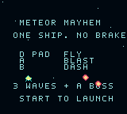
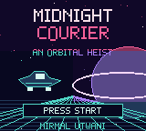

NEW GAME · ARCADE

Meteor Mayhem
Fly, blast, dash. Build a kill chain through three waves and take down the boss.
D-pad / arrows move · A / Z fires · B / X dashesHandmade little worlds for a real cartridge and your browser. Pick one and play.
View the source on GitHub ↗
Fly, blast, dash. Build a kill chain through three waves and take down the boss.
D-pad / arrows move · A / Z fires · B / X dashes
A compact neon heist with three stolen cores, a secret log, and one timed getaway.
D-pad / arrows move · A / Z advances · B / X checks mission